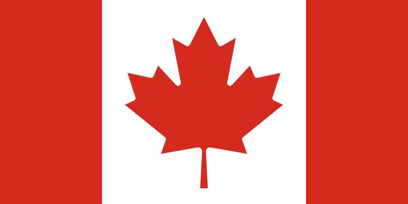

Perustietoja Kanadasta
Kanada on Kansainyhteisöön kuuluva liittovaltio Pohjois-Amerikassa. Pinta-alaltaan Kanada on maailman toiseksi suurin valtio (n.10 miljoonaa Km²). Kanadan pääkaupunki on Ottawa.
Valtiona Kanada on monikulttuurinen: erityisesti englantilainen, ranskalainen ja amerikkalainen kulttuuri ovat vaikuttaneet maahan. Kanada on monikulttuurillisuuden lisäksi myös monikielinen, virallisten kielien ollessa englanti ja ranska. Virallinen rahayksikkö on Kanadan dollari ($)(CAD).
Kanadan maantiede
Maantieteellisesti Kanada voidaan jakaa kuuteen alueeseen:
- Kanadan kilpi
- Sisämaan tasangot
- Suurten järvien-Saint Lawrencen alanko
- Appalakit
- Kordillieerit
- Arktinen saaristo.
Kanadan kilpi on vanha peruskallioalue, koostuen muinaisesta kuluneesta vuoristosta. Alue muodostaa noin puolet Kanadan pinta-alasta. Kanadassa on myös runsaasti järviä tai kosteikkoja, peräti viidesosa valtion pinta-alasta. Suuri osa Pohjois-Kanadasta on kylmyyden vuoksi viljelykelvotonta.
Kanadan viisi suurinta kaupunkia ovat:
- Toronto, 2 615 060 asukasta
- Montréal, 1 649 519 asukasta
- Calgary, 1 096 833 asukasta
- Ottawa, 883 391 asukasta
- Edmonton, 812 201 asukasta
Väkiluku ja Bruttokansantuote
| Vuosi | Väkiluku (milj.) |
|---|---|
| 1980 | 24.51 |
| 1990 | 27.67 |
| 2000 | 30.67 |
| 2010 | 34.00 |
| Vuosi | BKT |
|---|---|
| 1980 | 273.85 miljardia |
| 1990 | 593.92 miljardia |
| 2000 | 742.29 miljardia |
| 2010 | 1.61 biljoonaa |